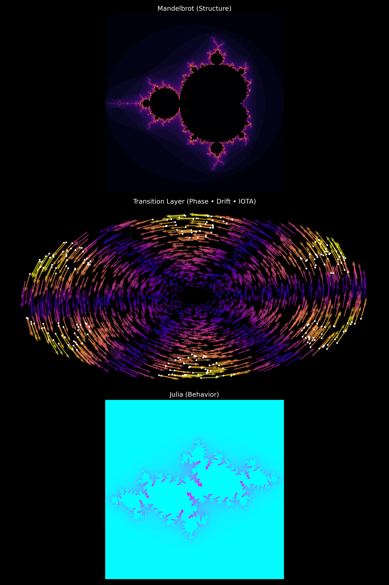
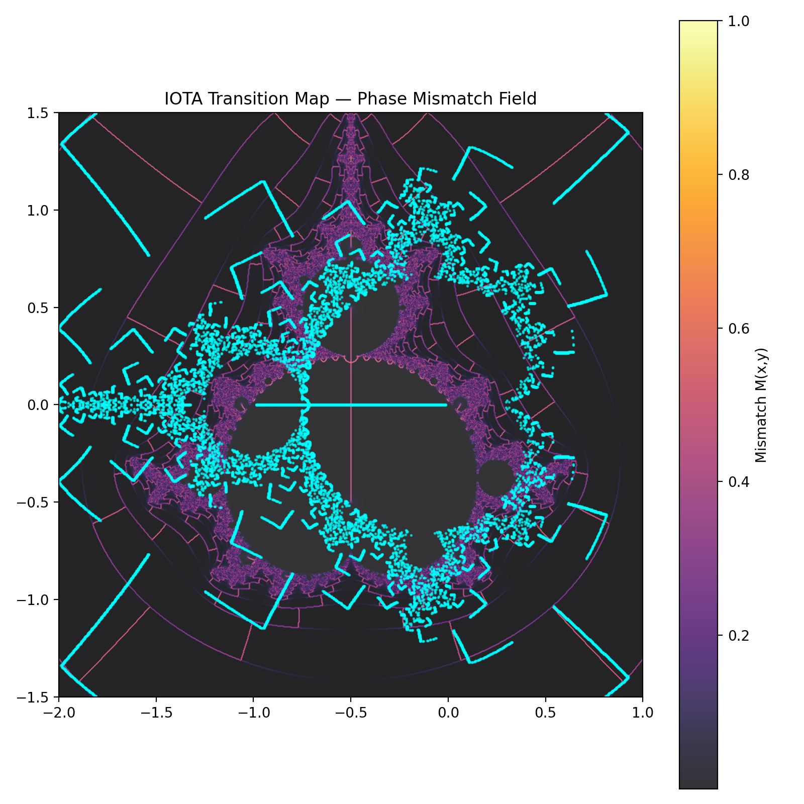
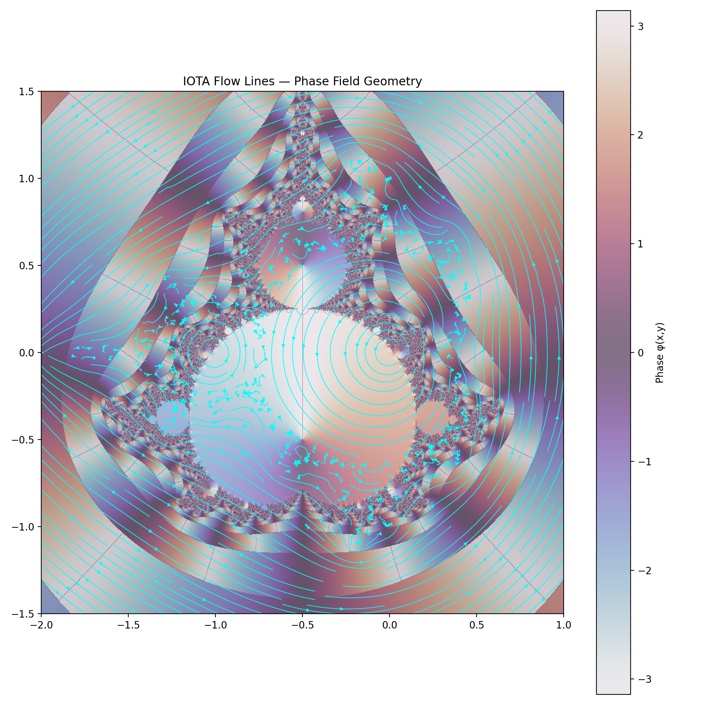
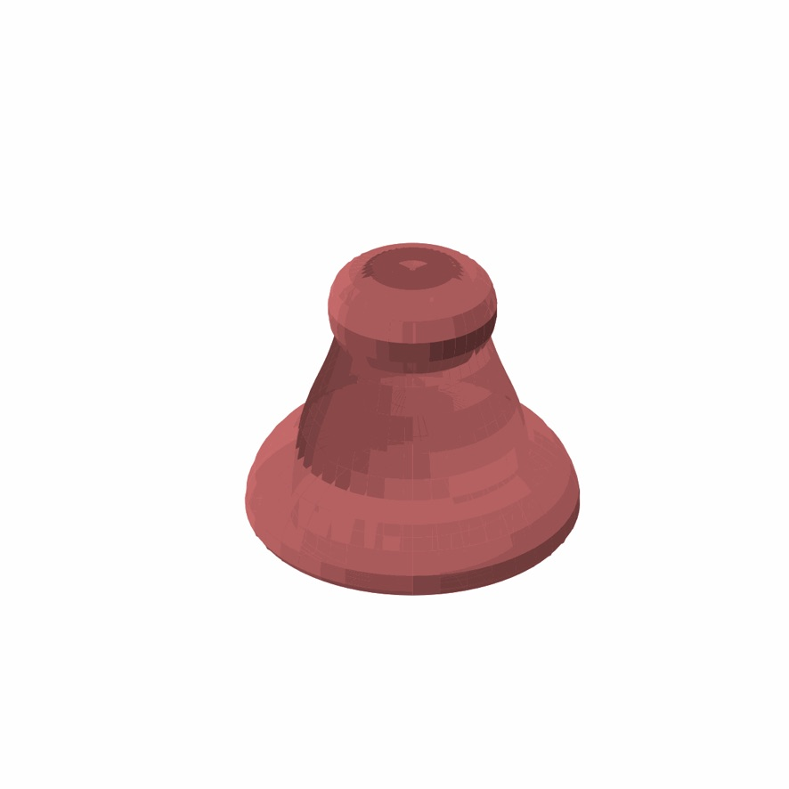

PRIME
CUBE
Der Primecube ist eine endliche Adressmaschine. Er hält denselben Zahlenrecord 1…1111 fest und zeigt, wie er unter Gitter, Cube, Schnitt, Fold, Root, Orbit und Return gelesen werden kann – ohne diese Ansichten miteinander zu verwechseln.
- 01Record: Die Zahl bleibt dieselbe.
- 02Adresse: Base‑11, Grid und CRT lokalisieren sie verschieden.
- 03View: Ein Operator macht bestimmte Eigenschaften sichtbar.
- 04Return: Jede Konstruktion muss zum Quellrecord zurückführen.
- Prime
- Zwilling
- Drilling
- Vierling
- Superprime
- Gap interior
- 11² closure
SO LIEST MAN DIESE SEITE.
Oben beginnt die Erfahrung. Unten folgen Audit, Verträge und Claim Boundary. Die technischen Module dazwischen sind Kapitel derselben Reise – keine getrennten Identitäten.
Comparator Dock: Wähle einen Untervertrag. Gemeinsame Anzeige bedeutet keinen gemeinsamen Operator. Root Mycelium Source ↗ · Cubit media intake ↗
Wo die Views zusammentreffen, bleiben ihre Verträge getrennt.
333° ist der getrennte Kontrolllauf mit 40 Richtungen, Return nach 40 Schritten und dreifachem Besuch. Plate/Mirror hält die Quelladresse und wechselt nur die Ansicht. Pink und Grey treffen sich in einem Vier-Register-Check aus Position, Farbe, Echo und Shadow; Grey bleibt die Kontrolle. „Breath“ hält den CORE fest und liest drei Bänder bei 0°/120°/240° über einen deklarierten Vier-Sekunden-Displayzyklus.
Der Cubit-Intake trennt den transkribierten historischen Kontext aus Egyptian Math: Part 1 von der nicht transkribierten visuellen 52.3 cm-Lesung aus Ancient Egyptian Math Is Modern Computing?. 20 9/16 in ergeben mit dem internationalen Inch exakt 52.22875 cm; 52.3 cm bleibt deshalb ein gerundeter Display-Faktor und kein exakter historischer Standard.
Gemeinsame Anzeige bedeutet weder gemeinsamer Operator noch physischer Mechanismus. Der Dzhanibekov-Effekt bleibt bis zu Trägheitstensor und falsifizierbarem Operatorvertrag eine ungebundene Analogie.
333 Source ↗ · Plate/Mirror ↗ · Pink/Grey ↗ · Breath ↗ · Cubit intake ↗
POINT → LINE → SLICE → GLUE → VIEW TOPOLOGY → RETURN
Record 661 bleibt stehen. Der View-Körper wandert durch sieben Konstruktionsphasen, während jede erreichte Form als Spur sichtbar bleibt. So wird Bewegung gezeigt, ohne die Quellzahl auszutauschen.
PORT CLOSED / CUSTODY HOLD OPEN: Der frühere Status DOMAIN_PORT_PENDING ist durch diesen Demonstrator geschlossen. Drei referenzierte Owner-Bilder fehlen weiterhin; die finite Adressprüfung bleibt gültig, der vollständige Source Receipt bleibt auf HOLD. View-Topologie ist keine intrinsische Integer- oder Primzahl-Topologie.
SHADOW CUBE / FULL 11³ ENVELOPE
Der Carrier 1…1111 bleibt eingefroren. Die vollständige Hülle ergänzt ausschließlich die 220 unbelegten Adressen 1112…1331: erst 99 Plätze bis zur Schattennaht 1210, dann die volle elfte Ebene mit 121 Plätzen.
11³ = 1331 = 1111 + 22099 + 121 = 2205 + · + 5 = 11397 · (0, 3, 3) ↔ 419 · (0, 5, 3) · Δy = 2 Rastereinheiten
↓ Beide Loki-Schnitte↓ Zur Schnittüberlagerung↓ Diagonalen in der Root Mask spannen
CLAIM BOUNDARY: ADDRESS EXISTS · RECORD ABSENT. Die Adressen 1112…1331 gehören zur vollständigen Base‑11-Hülle, nicht zum Primecube-Carrier. Sie erhalten keine Primzahl-, Konstellations-, Mess-, Family- oder Evidenzeigenschaft. Die wachsende „Schlange“ ist eine geordnete Adressspur. INSIDE→OUTSIDE→INSIDE′ bezeichnet Carrier, Envelope und Projektionsreturn — keine biologische, physische oder topologische Identität. Navigator-Delta: 0 IDs · 0 Relationen.
CRITICAL LINE / ROOT TOPOLOGY GATE
Ein geschlossener Orbit wird in Zylinderkoordinaten (ρ, φ, h) um die deklarierte Linie L={(0,0,h)} gelesen. Solange ρ>0 bleibt, ist die Windungszahl ganzzahlig. Trifft die Kurve die Linie, werden φ und w ausdrücklich undefiniert.
ρ=√(x²+y²)w=(1/2π)∮dφ ∈ ℤΔₖ=√(k+1)−√kCLAIM BOUNDARY: Root Geometry liefert hier lokale Metrik und eine deklarierte Slice-Familie — keinen „Schlüssel zu allen Topologien“. Die Windungszahl klassifiziert ausschließlich geschlossene Schleifen im Komplement dieser einen Linie. Knoten, Torus, Möbius, höhere Geschlechter und 3‑Mannigfaltigkeiten benötigen weitere Invarianten. Die Resonanzbilder sind Vergleichsmaterial, kein Beweis eines akustischen, materiellen, quantenphysikalischen oder universalen Mechanismus. Navigator-Delta: 0 IDs · 0 Relationen.
THOTH / AUA KNOT · KHIPU GENERATION LEDGER
Der Achsentreffer wird nicht mit Null „zugedeckt“: ρ=0 ist ein exakter Wert, während φ an diesem Punkt undefiniert bleibt. Eine deklarierte Über-/Unterhebung löst nur die lokale Kreuzung. Daneben zeichnet ein Khipu-inspiriertes Ledger vier ausgewählte Generationen mit dezimaler Stellenlage, Knotentypen und sichtbaren Null-Lücken auf.
ZERO ≠ NULLin: 90° · out: 270°10³ · 10² · 10¹ · 10⁰CLAIM BOUNDARY: Die Werte 1031 · 1032 · 1033 · 1111 sind synthetische NEXAH-Demodatensätze — keine Lesung eines historischen Khipu. Khipu und Primecube werden als räumliche Aufzeichnungssysteme verglichen, nicht historisch oder mathematisch identifiziert. Farbe, S/Z-Drehung und Recto/Verso-Befestigung sind kontextabhängige textile Register, kein universelles Wörterbuch. THOTH, AUA und IV O MA RI? MI ZE LI C bleiben Owner-Mnemonik auf HOLD. Navigator-Delta: 0 IDs · 0 Relationen.
S/Z CHIRALITY LAB · W INVARIANT
Zwei gegenläufige Display-Stränge teilen denselben Anker. S läuft mit +φ, Z mit −φ ≡ 360°−φ. Die pinke βχ-Bridge markiert ihre tatsächlichen Halbebenenwechsel als begrenzte View-Spur — nicht als dritte Chiralität. Der Feldmodus vergleicht konstantes β mit χ(z)|β|; das 5×5-Fenster hält Zentrum 13 fest.
rₙ₊₁=αrₙ+β(rₙ−rₙ₋₁)zₙ₊₁=zₙ²+c+αzₙ+χ(zₙ)|β|(zₙ−zₙ₋₁)102°·60 = 17·360°CLAIM BOUNDARY: S/Z ist hier ein deklarierter Vorzeichen- und Drehsinnschalter, keine universale Entschlüsselung historischer Khipus. Die pinke βχ-Bridge verbindet abgetastete Halbebenenwechsel als View-/Comparator-Spur; sie ist weder dritte Chiralität noch eigener Zustandsorbit. Der Player kehrt nur durch die sichtbare Eventliste zurück — nicht durch einen bewiesenen Operatorabschluss. P=α+β und Pχ=α+|β| sind Parameterkoordinaten, keine erhaltene Energie, Stabilitätsgarantie oder Orbitinvariante. Grüne Treffer sind Bildschirmnähen, keine Resonanz. BIG BIRD · CON DAO · THUNDER BIRD bleiben Owner-Bezeichnungen auf HOLD. Navigator-Delta: 0 IDs · 0 Relationen.
PRIMECUBE REVIEWER PACKET
Ein kompakter Prüfpfad bindet dieselbe Quelle an drei Paper-Figuren. Jede Figur ist als SVG exportierbar; der Demonstrator endet mit einem lesbaren JSON-Receipt statt mit einer bloßen Behauptung.
496 · TWO ADDRESSES · ONE SOURCE
FIVE-STAGE REVIEWER DEMONSTRATOR
- SOURCE
- ADDRESS
- VIEW
- BOUNDARY
- RETURN
CLAIM BOUNDARY: Die Figuren sind reproduzierbare Ansichten über demselben endlichen Carrier, keine neuen Forschungsobjekte. 496, seine Base‑11-Adresse und seine CRT-Adresse sind getrennte Register. W=±17 ist ein endlicher Winkelabschluss; P und Pχ sind Parameterkoordinaten. Die 220 Schattenadressen besitzen keine Carrier-Records. R1 verifiziert vorhandene Quellen; Study, Finding, Claim-Promotion und Publikationsfreigabe bleiben 0.
CRITICAL ORBIT BARCODE
Dieselben 60 Quellwerte werden gleichzeitig durch den Base‑11-Cube und das CRT-Gitter 7×11×13 gelesen. Der neue Kompass koppelt r11+r13 zu 24 Taktpositionen: 15° je Takt, 6 Takte je 90°.
MZ24(n) = ((n mod 11) + (n mod 13)) mod 24 · Indizes 0…23 · Achsen 0 / 6 / 12 / 18
CLAIM BOUNDARY: „Critical Orbit“, „Barcode“ und „MZ24“ sind Owner-/Darstellungsbegriffe. Die vier Rohregister bleiben getrennt. MZ24 ist eine deklarierte, nicht-injektive Projektion der Residuen mod 11 und mod 13 — keine CRT-Identität. Weil r11≤10 und r13≤12, bleibt Takt 23 eine sichtbare Negativkontrolle; Cube-z bleibt die unabhängige vertikale Spur.
SPLINTER SAIL GRID
2×3 LADDER · C₆ BOUNDARY · FOUR TRIANGULATED SAILS. Gold hält die sechsten Potenzen 1 · 64 · 729; Grün hält die Seam-Squares 121 · 484 · 1089. Der geordnete Rand schließt als 1→8→11→22→27→33→1, während die mittlere Sprosse 8↔27 die beiden Zellen koppelt.
CLAIM BOUNDARY: „LOKI CHASSIS“ ist nur der lokale Owner-Name dieser Ansicht und keine Gleichsetzung mit der vorhandenen LOKI‑Q4-Identität. Der Rand ist ein nicht-regulärer C₆ im triangulierten 2×3-Leitergitter; die vier farbigen Segel sind Bildschirmflächen, kein bewiesener 3D-Körper. Das exakte Root-Mittel ist (1+8+11+22+27+33)/6 = 17. Nur Einschub C, 1105=5·13·17=915₁₁, liegt im Carrier; A, B und D bleiben externe Crosswalks.
MATHFIELD COUPLING DECK
Das Splinter Sail Grid bleibt der Träger; jeder Adapter bleibt eine eigene Lesart. Für die folgende Erzählung ist F · Mandelbrot der Übergang vom Parameterfeld zur gemeinsamen Lantern-Naht.
CLAIM BOUNDARY: Das Deck schaltet typisierte Ansichten um; es behauptet keinen gemeinsamen Mechanismus. Beim Fraktaladapter koppelt dasselbe c Parameter- und Dynamikraum, ohne beide gleichzusetzen.
Technische Abgrenzung des Adapterdecks
Beim Gradient Curtain koppelt C=(θ,γ,φ,yaw,t) nur Bedienzustand, Geometrieansicht und ILAU-Audit; 12,5° ist eine gewählte Rahmenverdrehung und keine Prime-Cube-Konstante. Binär, trinär, quaternär und quintär codieren nur dieselbe Zeitadresse. Die rote/blaue Kappe ist eine normierte Residualhülle, kein zusätzlicher Körper. Der ISO45/ζ-Test ist eine reversible Bildschirmfaltung um die feste Sprosse 8↔27; er beweist weder physische Aufhängung noch Energiekanal oder LOKI-Identität. Die 45/78-Lesart bleibt ein separater arithmetischer Overlay. P=α+β ist eine Parameterkoordinate, kein erhaltenes Energie- oder Stabilitätsbudget. Die zweischrittige Rekurrenz ist ein komplexer quadratischer Hénon-Typ, nicht das klassische Mandelbrot. Der Cube liest nur einen synchronisierten Integer als Base‑11-Adresse; er wird nicht aus c,α,β oder der Orbitgeometrie abgeleitet. Endliches Nicht-Entkommen bis N beweist weder Membership noch Inneres.
YUGO / JOGI FUSION FRAME · 5+2 RETURN SEQUENCE
Fünf lokale Julia-Rollen umgeben zwei zentrale Ansichten. Dazwischen trägt die pinke OM | IJ-Lantern genau einen gemeinsamen Parameter c. Der Θ-Lift führt den erhaltenen Cube über sieben sichtbare Stationen von W11 nach W13; Source, Adresse und Return bleiben fest.
11² + 23 = 12²12² = 72 AM + 72 PMΣΔk = √13 − 112² + 25 = 13²DISPLAY MAP: Zwölf vorhandene Root-Metriken Δk = √(k+1) − √k steuern zwölf normierte Kurvenhöhen. Die mittlere Blende besitzt zwei sichtbare Aperturen. Rotation und +80°-Drift runden die projizierten Grid-Spuren; +72° bleibt der exakte Fünfschritt-Vergleich. Keine Wellenmessung, kein physikalisches Doppelspalt-Experiment.
Path / Δ · Algo Curtain & Lissajous
Die Position auf dem Mandelbrot-Kreis wählt c für Julia. Der Shadow liest den gelb markierten Ausschnitt mit eigener Abtastung.
IOTA-Quellansicht und Flow



Quellbilder aus NEXAH Core, RESEARCH/APPLIED_CASES/FRACTAL_SYSTEMS/scripts/outputs. Die IOTA-Karte verwendet ihr eigenes Phasenfeld. Die Live-Kurve benutzt ein festes 42²-Raster mit 70 Iterationen; ihre Peaks markieren Bildänderungen oberhalb der Anzeigeschwelle.
Die Disc zeigt den Abspielwinkel. Zwei Sinussignale mit wählbarem Verhältnis und Phasenversatz zeichnen die Lissajous-Bahn.

Im Club führt die Connector Chamber eine Zipper-Naht. Im GIF sieht man die Bewegung eines ganzen Drahtgitters. Das Root Topology Gate prüft separat, ob ein Orbit die Achse trifft.
A0 Owner Staging · NEXAH Science Lab · codex/five-h-binding · uncommitted · Owner-Abnahme offen · lokale A0-Ansicht.
OMIJ LANTERN · PINK STRIP / DIRICHLET FIVE
O|M und I|J bleiben zwei Rollenpaare. Die +1-Naht trägt denselben Parameter c; fünf getrennte Character-Spuren lesen daneben ζ sowie die vier Dirichlet-Charaktere modulo 5 an der deklarierten Linie Re(s)=1/2.
TYPE BOUNDARY: Die Lantern verbindet zwei Darstellungen über dasselbe c; sie identifiziert ihre mathematischen Räume nicht. Der Θ-Lift verändert nur Lage, Skalierung, Winkel und Spur der vorhandenen Cube-Ansicht. Die neue Amplitudenansicht mappt die zwölf vorhandenen Root-Metriken auf normierte Kurvenhöhen und führt sie durch zwei Display-Aperturen; sie ist keine Wellenmessung, Interferenzrechnung oder physikalische Doppelspalt-Simulation. Der Observer-Modus koppelt die bereits vorhandene Gradschwelle ∃d₀ ∀d≥d₀ an eine deklarierte Janus-Involution und ein Witness-Gate; er ist ein Primecube-Adapter, kein neuer Träger und kein Lean-Beweis. Die fünf L-Spuren zeigen Character-Definition und Konjugation, keine berechneten L-Werte oder Nullstellen. Re(s)=1/2 ist eine deklarierte GRH-Prüflinie, kein Beweis. Strip, Glow, Whiteout, Lift und Richtung sind Displaycodes.
Technische Abgrenzung des Fusion Frames
IN ist der Mandelbrot-Parameterraum, OUT eine Julia-Dynamik-/Return-Ansicht für festes c. HC·O und PSHYSIC bleiben ungebundene Owner-Mnemoniken. Ein physisches Ereignis wird nicht als von Psyche oder Bewusstsein abhängig behauptet; nur Physik als wissenschaftliches Wissen benötigt Messwechselwirkung, Record, Witness und Interpretation. € ist nicht ε; ¢ bleibt HOLD; Ψ↻90° ist eine Glyph-Ansicht, keine Wellenfunktion oder neue Identität; sichtbarer Strich, Displayachse und mathematische Gerade bleiben verschieden. P/D/C/φ/S sind lokale Messrollen. Σ12 zählt zwölf Übergangskanten zwischen Zeile 6 und 7; G√ weist ihnen die vorhandenen Root-Ruler-Maße zu. Pink Pentagon, Blue Machine, Greyspace, Fade, Grid-Overlays, Schlieren-Komposition, Lotus-Maske, step-abhängiger Whiteout und feine normierte Fäden sind Cartography. TESLA 4×7 bleibt der Owner-Name eines 28-stufigen Displayzyklus, kein elektromagnetischer, energetischer oder physischer Mechanismus. Die verwandte Panel‑V‑Kontrollansicht wird verlinkt, aber nicht mit dieser Lantern-Naht identifiziert. Identity reuse: MOD:NUMBER_VIEW_SUITE, ART:A0:MATHEMATICAL_JOINTS; Graph-Delta 0/0/0. Das View-Invariance-Audit darunter bleibt die Diagnose und ersetzt diese gemeinsame Komposition nicht.
TRANSVERSAL PLANE / BOUNDARY SERIES RETURN
Der Science-Desk-Return wird jetzt im Primecube selbst als Querschnitt durch dasselbe Screen-Chassis sichtbar. Die Ebene trennt nicht „wahr“ von „falsch“: Sie hält exakte Register, gebaute Ansichten, Lesarten und physische HOLD-Hypothesen typisiert auseinander.
ΠT={(x,y,z):z=0}transversal ⇔ dz/dt ≠ 0tangent contact ⇒ NONTRANSVERSALShells · Q± · CRT · 1024 · 5040
Endliche Mathematik und reproduzierbare Return-Register.
Primecube · Splinter · Pascal · Scarab · N-Band
Fünf Instrumentrollen auf einem retained chassis.
Dot · ±1 · shell · separate registers
Nützliche Arbeitsgrammatik, keine physische Identität.
Quartz · iron · phase matter · String/E8
Messvertrag oder typisierte Vergleichsabbildung fehlen.
Projection invariant · 308 utility · material channel
Ein Crossing zählt nur bei Vorzeichenwechsel der Normalenkoordinate und nichtverschwindender Normalgeschwindigkeit. Ein tangentialer Kontakt bleibt eine sichtbare Negativkontrolle.
TYPE BOUNDARY: ΠT ist eine deklarierte Schnittebene dieser Ansicht. Sie wird nur für eine Kurve mit dz/dt≠0 am Schnitt transversal genannt. Sie ist nicht die Riemannsche kritische Linie, kein kritischer physischer Grenzwert und kein Beweis eines gemeinsamen Mechanismus. Das separate Root-Topology-Gate behält seine ausdrücklich definierte Achsenlinie L={(0,0,h)}. Identity reuse: ART:A0:MATHEMATICAL_JOINTS, MOD:NUMBER_VIEW_SUITE; Graph-Delta 0/0/0.
W7 × W8 × G13 / TRIPLE RETURN
Das historische Hexaptychon wird als prüfbarer endlicher Zustandsadapter zurückgeführt: Wheel 7 läuft vorwärts, Wheel 8 gegenläufig, das innere 13er-Gate vorwärts. Erst wenn alle drei Register gleichzeitig Null erreichen, ist der Return vollständig.
lcm(7,8)=56 · G13=4lcm(7,8,13)=728728+1=729=9³=27²=3⁶CLAIM BOUNDARY: Dies ist ein endlicher Produktzustands-Adapter ℤ₇×ℤ₈×ℤ₁₃. 56 schließt nur W7/W8; das 13er-Register steht dann auf 4. 729 ist ein äußerer +1-Closure-Marker und nicht die Periode des Operators. TOP, SIDE und ΠT zeigen denselben Zustand; die transversale Ebene ist eine deklarierte Sampling-/Return-Ebene und keine kritische Linie. Der Red Balloon markiert Auswahl und Beobachterposition, ohne Operator oder Zustand zu verändern. „Wheel 7 (1729-Kreis)“, „Wheel 8 (1836-Kreis)“ und „Quaternion Gate“ bleiben historische Source-Labels aus FAM-002. Der Demonstrator beweist weder Quaternionenalgebra noch Riemann-/Zeta-Mechanismus, physische Resonanz oder ein ausgezeichnetes Primzahlpaar. Identity reuse: ART:A0:MATHEMATICAL_JOINTS, MOD:NUMBER_VIEW_SUITE; Graph-Delta 0/0/0.
PRIME CUBE CONTROL PLANE
Ein gemeinsamer Prüfstand hält drei unabhängige Register bis zum exakten Schritt‑840-Return. Der Splinter-Rand wird separat über T20¹⁰ als C6 abgetastet; der Fold wirkt darauf als D6-Spiegelung. Der MZ24-Phasentest bleibt sichtbar negativ.
. SOURCE → : JOINT → TARGET
Q-GRUPPENFENSTER / LOKI −8 RECURRENCE
840−120=720840+600=14407·720=6·840=5040720=φ(1001) schließt Q60, Fold2 und die LOKI-Orientierung C8. Gleichzeitig gilt 720≡−8 (mod 56): Pro Fenster wandert die C7-Station genau einen Schritt rückwärts. Erst das siebte Fenster kehrt vollständig zurück.
BOUNDARY: Die Residue 8 ist durch gcd(720,56)=8 und die gehaltene LOKI-Lesart C7×C8 exakt. 8=2³ bleibt ein numerischer Cube-Crosswalk; eine Ableitung aus Würfelgeometrie ist nicht etabliert.
COMMON 24 REFINEMENT
lcm(6,8,12)=24. C8 belegt jeden dritten, D12 jeden zweiten und C6 jeden vierten Tick. C8∩D12 liegt bei 0/6/12/18.
90/60 = 84/56 = 3/260·84 = 90·56 = 504084 = 6·7·2NEGATIVE CONTROL: Das konstruierte C6-Raster 0/4/8/12/16/20 stimmt an keiner der sechs Positionen mit dem beobachteten MZ24-Readout 2/5/4/13/10/11 überein. Gemeinsame Modulgröße bedeutet keine Identität.
0.2 mm COMMON TICK
1″ = 2.54 cm = 127/50 cm. Länge, Einheit und Tick-Adresse bleiben getrennte Felder.
| Inch | Centimeter | Ticks |
|---|
10″ = 25.40 cm = 1270 ticks12″ = 30.48 cm = 1524 ticks10:12 = 5:6EXACT RETURN: 50″ = 127 cm = 6350 ticks. Die Einheitenkonversion bewahrt den Disk-Quotienten; sie erzeugt keine Winkel-, Phasen- oder Zustandsidentität.
ORIGAMI SPLINTER TRANSPORT ADAPTER
Dieselben Spaltenverschiebungen wirken oben und unten. Dadurch bleiben die vertikalen Differenzen 32 / 19 / 11 exakt; gleiche äußere Deltas erhalten die Spiegelpaarung.
8↔27 → 9↔281↔11 → 0↔1033↔22 → 32↔21Δrow = −1 · Δtotal = −2RESULT: [-1,+1,-1] ist eine injektive Wanderung der sechs Labels, aber keine Erhaltung: die „1“ wird umverteilt und pro Reihe bleibt −1. Der Nullsummen-Test [-1,+2,-1] erhält dagegen Σ=102, kollidiert oben jedoch bei 10/10 und scheitert deshalb als sechsstellige Adressumschreibung. Die neuen Werte sind Integer-Labels, keine Prime-Anker und kein physischer Transport.
ZIRKEL CRAWLER · STEP / FIELD / RETURN
Die acht Owner-Visuals werden als Source-Witness gebunden. Der Zirkel behält 1–7 als äußere Strukturpunkte, 8 als festen Pivot und 9/10/11 als getrennte Feldports. Der Crawler bewegt nur die deklarierte Ansicht.
ζ(2) / π² / ALPHA–BETA SPLIT
Vier getrennte Register: klassische Identität, formale Cube-Skalierung, lokaler α/β-Split und der Owner-Glyph-Cut ζ→73/37.
SCARAB / T11 / SHADOW RAIL CONTROL
T11(n)=n+11 hält die Cube-Spalte. Derselbe Adressoperator wird an drei getrennten Fixture-Familien geprüft.
CENTER 13 / 5040 NEIGHBOR CONTROL
Sechs typisierte Tests verbinden die neue Beobachtung mit vorhandenen Prime-Cube-Returns, ohne Window, Cube-Summe, Fakultät, Dezimaldarstellung, Kalenderarithmetik und historische Herkunft zu verschmelzen.
8↔9 · polarity involution8→10 · 1/12…11/12 strip view8→11 · Tao/Wal boundary roleA−·A+=1RESULT / HOLD: Die beobachtete Linie 8→10 ist als extern belegte Streifenansicht 1/12≤Re(s)≤11/12 gebunden: Mitte 1/2, Halbbreite 5/12. Sie ist nicht dasselbe wie der lokale Probe δ=1/12, der um die kritische Linie nur 5/12…7/12 erzeugt. Port 11 bleibt eine getrennte Tao/Wal-Grenzrolle und ist kein Streifen-Endpunkt. Die Anzeige leitet den Satz nicht aus dem Zirkel her. Elf Rollen begründen außerdem weder einen regulären C11-Träger noch 2π/11. Im historischen Schmetterling ist midpoint(1031,1033)=1032, nicht 1034.
Fold-compatible orders
48 / 720Vier zyklische Klassen. Die bestehende Reihenfolge besteht, ist durch den Fold allein aber nicht eindeutig.
Q1001 order six
56 ORDER-6 UNITSNur T20-Exponenten 10 und 50 gehören zur gehaltenen T20-Bahn; global ist der C6-Generator nicht einzigartig.
Informative uniform MZ24
0 / 56430 und 859 bleiben degeneriert auf Tick 2. Kein nichttrivialer konstanter Phasentransport.
C6 rotation / D6 fold
π/3 → π/660° Rotation; Spiegelung halbiert die Fundamentalkammer auf 30°. Kein MZ24-Gesetz.
.:SOURCEBOUND · addressed source point:DEFAULT · open typed joint:Q+LOCAL · q′=771q mod 1001:Q−LOCAL · q′=309q mod 1001:φFAIL · uniform MZ24 phase€OWNER CANDIDATE · unbound¢UNBOUND GLYPH LEDGER · HOLDCLAIM BOUNDARY: Der exakte 840-Return ist das kgV unabhängiger Perioden und kein natürlicher gemeinsamer Takt. Der C6/D6-Adapter ist source-spezifisch und nicht die eindeutige Ordnung‑6-Einbettung in (ℤ/1001ℤ)×. π/6 ist die Fundamentalkammer der Spiegelwirkung, keine MZ24-Phase. :Q± ist lokale Display-Syntax; der Doppelpunkt wird nicht global umdefiniert. € und ¢ bleiben ungebunden. Neue IDs, Relationen, Study, Finding und Publikationswirkung: jeweils 0.
SCARAB CONTROL / FOLD 108
Die vorhandene Three‑Face‑Transit-Projektion wird hier als eigene Steueransicht geöffnet. Vier Projektionen, der Winkel und drei deklarierte Presets bleiben auf demselben Scarab-Record.
108° = 9·12°cos θ = −0.834 → θ ≈ 146.511854°0.661·1000 = 661 = p₁₂₁0° → 108°
HYPERSTRUKTUR RESONANZPUNKTE
ORANGE TRIANGLE · CIKADA RETURN
SCARAB CARRY / MIRROR GATE
CLAIM BOUNDARY: 108°, cos θ=−0.834 und 0.661 sind drei getrennte Register: Faltwinkel, trigonometrischer Eingang und Dezimalskalierung. 41°/42°/43° sind Radbögen, nicht die Innenwinkel des schematischen Dreiecks. CI→KA→DA beziehungsweise INSIDE→OUTSIDE→INSIDE′ ist eine deklarierte Zustandslesart; das zurückgekehrte Innere bleibt vom Ausgangszustand verschieden. Primindex, Euler-Totient, Dezimalspiegel und 11-Bit-Reversal bleiben vier typisierte Operatoren. Der gemeinsame Fixture beweist weder einen gemeinsamen Generator noch einen physischen Exit oder ein universelles Scarab-Gesetz. Bestehende Identität wird wiederverwendet: 0 neue IDs, 0 neue Relationen.
FIXPUNKT / ± N‑BANDS
Eine eigene Ansicht für die algebraischen Fixpunkte der α/β-Rekurrenz. Die drei Breathing-Crystal-Bänder werden als symmetrische Vergleichspositionen gelesen – nicht als identische Orbitwerte.
z*²+(α−1)z*+c=0β(z*−z*)=0J=[[2z*+α+β,−β],[1,0]]TYPE BOUNDARY: Die zweite Achse ist δzₙ₋₁, der vorherige Zustand – nicht Imaginärteil oder eine zusätzliche Raumachse. Das Display ist eine reelle lokale Linearisierung; der volle komplexe Zweischritt-Zustand ist vierdimensional über ℝ. BAND_0.429, BAND_0.456 und BAND_0.487 bleiben Displaynodes, keine invarianten Mannigfaltigkeiten. 0.478 bleibt Negativkontrolle. Keine neue Navigator-Identität oder Relation.
MANDELBROT / αβ MEMORY FIELD
Vier feste Schnitte derselben zweischrittigen Rekurrenz machen die Mittelachse sichtbar. P=α+β hält nur eine Parameterdiagonale fest: Ort und Differenz wirken weiterhin an verschiedenen Zuständen.
zₙ₊₁=zₙ²+c+αzₙ+β(zₙ−zₙ₋₁)P=α+ββ=0, α=0 → klassisches Mandelbrot4×(5×5)+1 = 101
5+1+5=11. Die vier 5×5-Quadranten plus Zentrum wählen 101 der 121 Zellen. Die übrigen 20 Zellen der Mittelarme sind ausdrücklich nicht Teil dieser Maske. Al‑Jabr Lens / „.“ öffnen ↓
2→4→8→5→10→9→7→3→6→1→2
2 ist eine primitive Wurzel modulo 11; der Rotor besucht alle zehn von null verschiedenen Restklassen. 101₁₀=92₁₁≡2 ist der Handle. Der Schritt 101→2501 wechselt den Integer-Repräsentanten und ist keine Verdopplung der ganzen Zahl. Interaktiven Rotor öffnen ↓
8+9=17 · 8×9=72 · (8/9)(9/8)=1
Prime-index bridge8|3=83=p₂₃23 | 3565, denn 3565=5×23×31.
Unit crosswalk1728 h = 72 dDie 72 ist ein typisierter Einheiten-Crosswalk, keine Ableitung aus dem Rotor.
3–6–9 control3→6, 6→1, 9→7Die Teilmenge ist unter ×2 mod 11 nicht geschlossen; Root2 bleibt HOLD / nicht etabliert.
83 entsteht hier durch Dezimalkonkatenation 8|3. Konkatenation, Produkt, Restklasse und Primrang bleiben verschiedene Operatoren.
CLAIM BOUNDARY: Nur α=β=0 ist die klassische quadratische Mandelbrot-Familie. Für β≠0 ist der vollständige Zustand (zₙ,zₙ₋₁); gezeigt wird ein endliches Escape-Time-Bild eines komplexen quadratischen Hénon-Typs. Nicht-Entkommen bis N beweist keine Membership. Der Mod‑11‑Rotor wirkt auf Restklassen; 101≠2501. Dezimalkonkatenation ist keine Multiplikation. Das 3‑6‑9‑Motiv ist kein geschlossener ×2‑Unterzyklus und etabliert keine Root2-Identität. Bildschirmähnlichkeit koppelt weder Fraktal, Primecube noch Root-Maske ontologisch.
101 HANDLE / MOD‑11 ROTOR DEMONSTRATOR
Fahre den vollständigen ×2‑Orbit, trenne den 101‑Handle vom Integerwechsel und schalte die 3‑6‑9‑ sowie 8/9‑Kontrollen auf demselben Restklassenrad zu.
r ↦ 2r mod 11 · ord₁₁(2)=10DEMONSTRATOR BOUNDARY: Ein Rad, vier typisierte Ansichten. Nur der Restklassen‑Rotor besitzt den Operator r↦2r mod 11. Handle, Dezimalkonkatenation, Produkt, Primrang und Einheiten‑Crosswalk werden nicht zusammengelegt. Die 3‑6‑9‑Probe ist eine sichtbare Negativkontrolle; Root2 bleibt HOLD.
AL‑JABR LENS / THE DOT
Die 101-Zellen-Maske wird schrittweise zum vollständigen 11×11-Quadrat ergänzt. Gleichzeitig trennt die Ansicht drei Lesarten des Punkts: sichtbares Zentrum, Dezimalskalierung und Multiplikation.
4·(5·5)+1 = 101101+20 = 121 = 11²121·10⁻² = 1.21ONE CARRIER / DÜRER Q · KHAJURAHO D
Der blaue Körper C bleibt unverändert. b,d,q,p sind nur vier Ansichtsregister; Spiegelung und 180°‑Drehung permutieren die Auslese, nicht den Würfel. Dürer und Khajuraho zeigen dieselben Labels 1…16 und dieselbe Σ34 unter zwei verschiedenen Ortsoperatoren.
CLAIM BOUNDARY: Al‑Chwarizmis geometrische Ergänzung quadratischer Ausdrücke ist eine historische Analogie – nicht die Provenienz oder Identität dieser 11×11-Maske. CENTER_DOT, DECIMAL_POINT und PRODUCT_DOT sind drei Ausleserollen desselben blauen Carriers C; 102°/204°/258° sowie AM/PM/VM erzeugen keine weiteren Körper. Im lokalen Overlay ist 1 skalar, i/j liegen in der Aufsicht und k ist eine deklarierte Carrier/Shadow‑Tiefe. + ZERO und × ZERO sind zwei verschiedene 101‑Selektionen. Ihr Schnitt besitzt 81 Zellen, ist aber kein zusammenhängendes 9×9‑Untergitter. Dürer Q und Khajuraho D verwenden dieselben Labels und dieselbe Summe 34, aber verschiedene planare bzw. torische Platzierungsoperatoren. Im p/b/q/d‑Demonstrator werden nur Ansichtsregister permutiert. ZERO ist ein vorhandener numerischer Zustand, NULL ein ungebundener Record außerhalb von Rechnung und Zellzahl. Die Sektorlabels 2,3,5,7 und 24·210=5040 sind deklarierte Comparatoren. Die Benennung beweist weder Quaternionenalgebra noch eine physische Shadow‑Cube‑Achse. 5+6≡0 (mod 11) bedeutet additive Inversen; ein reguläres 11‑Eck besitzt wegen seiner ungeraden Eckzahl kein gegenüberliegendes Vertexpaar.
VIEW‑INVARIANCE AUDIT / SAME CARRIER, DIFFERENT CUTS
Die Matrix prüft für jede benannte Größe, was unter AM/PM/VM, Dürer Q, Khajuraho D, p/b/q/d, Linie, Transversalebene, Root und Greyspace erhalten, verloren, hinzugefügt oder unaufgelöst bleibt.
Carrier, 121 Zellen und Operatorgesetz.
Das ist der gemeinsame mathematische Kern. Eine andere Ansicht darf ihn anders zeigen, aber nicht umbenennen.
Winkel, Winding, Labels und Screen-Position.
Diese Größen entstehen oder verschwinden mit dem gewählten Schnitt. Sie sind keine automatische Eigenschaft des Carriers.
Gezielte Fehler statt neue Theorie.
Shuffle, falscher Operator, Carrier-Wechsel und Axis Hit müssen genau die erwarteten Invarianten brechen.
SCIENCE DESK BOUNDARY: RETAINED gilt ausschließlich für die benannte Größe unter ihrem Operatorvertrag. ADDED und LOST sind kartografische Ergebnisse; UNRESOLVED bedeutet nicht falsch. Die vier Kontrollen zerstören gezielt Σ34, das D‑Operatorgesetz, den Carrier-Vertrag oder die Definition von Winkel/Winding am Axis Hit. Das Instrument ist source-bound und synthetisch: kein Lab Run, keine Study-Aktivierung, kein Finding, keine neue Navigator-ID oder Relation.
4774 RETURN SEAM / NCS 292 MEMORY SLICE
Zwölf alternierende Bildschirmsektoren treffen die horizontale Rückführungsebene. W hält den ganzen Träger; M zeigt bewusst nur einen verlustbehafteten Ausschnitt. Die Mitte trennt den exakten Blocktausch von seinem konstruierten Moiré-Display.
47+74=121=11²74−47=27=3³4774 ⇄ 7447 · S₂²=id9119 ⇄ 1991 · comparatorCLAIM BOUNDARY: Die gezählten 6 weißen + 6 schwarzen Streifen und die horizontale Ebene sind Owner‑Screenlesarten. FESN:4774 bleibt eine typisierte palindromische Displaynaht. S₂ ist der exakte Zweierblocktausch 47|74 ⇄ 74|47, nicht die gewöhnliche vierstellige Umkehr. Das 47/74‑Moiré ist ein konstruiertes Kontrast‑Overlay zweier getrennter Line-Familien und kein physikalischer Schlieren-, Energie- oder Resonanznachweis. 9119 ⇄ 1991 ist ein separater Comparator, keine neue Identität oder Relation zu 4774. 293→292 bleibt ein vorgeschlagener Nachbar‑Adapter, nicht der rekonstruierte NCS‑Operator Td(x,y,z)=(x+d,y+d,z). HOPF: HOLD. Neue IDs, Relationen, Study und Publikationswirkung: jeweils 0.
DRAFT, DRIFT & HOUSING · 1/112
Ein gemeinsamer Bildschirm, sechs getrennte Prüfungen: Draft-Schritt, Triple Transition, Acht-Glyph-Register, Zahlenoperatoren, π/i/j-Achsen und NCS/Mandelbrot-Adapter.
1/112 = 0.008928571…181 = 69 + 112 = p₄₂ZERO ≠ NULLCLAIM BOUNDARY: 1/112, Primrang, Faktorisierungen und Quaternionenreferenzen sind exakte Mathematik. „Draft“, „Drift“, „Housing“, die acht Glyphen und AT bleiben deklarierte Displayrollen. INSIDE′ ist kein Wiedereintritt derselben entkommenen klassischen Mandelbrotbahn. π ist ein reeller Winkelparameter und nicht das Verhältnis von i und j. NCS 292 und Mandelbrot teilen nur den sichtbaren Vergleichsträger. Neue IDs, Relationen, Study und Publikationswirkung: jeweils 0.
787 → 797 → 809 → 811
Vier Primknoten in derselben Cube-Schicht z=6. #n bezeichnet den Primrang; H₅ und H₆ sind deklarierte Base‑6/Dice-Adressen mit exaktem Return.
17-frame: 5 + 6 + 6 wird als deklarierte Bestandsaufnahme gelesen: fünf Dice-Positionen, sechs Flächenlabels, sechs Orientierungspole. Keine natürliche Identität mit Primrang, Cube oder Root-Raum wird behauptet. 7.83 bleibt ohne expliziten Operator eine mnemonische Lesart, keine Gleichheit mit 787.
Der Würfel ist eine Adresse
n−1 = x + 11y + 121z
n = 1 + x + 11y + 121zFür 1≤n≤1111 ist die Zuordnung eindeutig. Die 3D-Ansicht verändert die Zahl nicht und kann exakt zu ihr zurückkehren.
Geprüfte endliche Population
- 186 Primzahlen
- 40 Zwillingspaare
- 32 Drillinge der Formen
(p,p+2,p+6)oder(p,p+4,p+6) - 5 Vierlinge
(p,p+2,p+6,p+8) - 42 Superprimzahlen
661→809 ist kein Prime Gap
Zwischen den Zwillingsankern (659,661) und (809,811) liegen 18 einzelne Primzahlen. Die Faltung ist ein frei einstellbarer View-Transform über diese zwillingsfreie Clusterstrecke – kein entdecktes Scharnier der Primzahlen.
Zwei Wurzelordnungen, zwei Skalengesetze.
Δ₂(k)=√(k+1)−√k ~ 1/(2√k)
Δ₃(k)=∛(k+1)−∛k ~ 1/(3k2/3)Die Linse zeigt beide exakten Nachbarabstände für 1≤k≤1110 und legt die jeweiligen Asymptoten gestrichelt darüber. √2, √5, √7 bleiben Rootroom-Quellanker; 5/11/17 ist eine getrennte CODON-F1-Quellrail. Die ganzzahligen Kubikwurzelstellen 8…1000 markieren perfekte Kuben. Der Trident zeigt nur die historische Drei-Achsen-Lesart 90°/210°/330°; er definiert keine Zahlenabbildung, Zeitphysik oder Resonanz.
Quadrate takten den Root Ruler.
Σ[k=m²…(m+1)²−1] Δk = 1
(√k)² + 1² = (√(k+1))²Die neue Ansicht zeigt 33 Quadratzahlanker, die drei Seam-Squares 121 · 484 · 1089, die sechsten Potenzen 1 · 64 · 729, zwei Rails nach Primrangparität und das lokale L‑Dreieck. Record 1111 besitzt keinen internen Vorwärtsschritt.
Neun ganze Layer, dann 22 Knoten
121…1089 = m·11²
9×121 + 22 = 1111Die neun Abschlüsse liegen bei [10,10,z] für z=0…8 und sind garantierte Komposita — strukturelle Negativkontrollen, keine Primevents. Die gestrichelte Fortsetzung endet bei 1210=10·121, 37er-Adresse (row 32, col 25) und erweiterter Cube-Adresse [10,10,9]. Sie ist eine Shadow Closure: 99 Knoten außerhalb des Carriers, keine verborgene Family-Node. RDMH bleibt historische vertikale Provenienz; 29.02.1972 · R / Handle ist ein getrennter gültiger Kalenderwitness. Eine Identität beider ist offen.
Indexnaht und Faltachse bleiben typisiert
p₁₂₀=659 · p₁₂₁=661
661=551₁₁ · addr=550₁₁(659,661) ist Zwillingspaar #30 und der linke Anker der längsten zwillingsfreien Clusterstrecke bis 1111. Der starre Hinge rotiert n≥661 um uᵧ=0, u_z=1/9. Die 3D-Rotation bleibt bijektiv; nur die anschließende 2D-Projektion kann Quellpunkte überlagern.
Zwei Flügel, eine 37er-Achse
(17,29)→(17,31)
↓ 4 rows
(21,31)→(21,33)Die zusätzliche Ansicht verbindet dieselben vier Twin-Anker über 37er-Grid und Base‑11-Cube. Blau ist der Prime-Pin; rote, gelbe und violette Ringe zeigen überlappende Twin-, Triplet- und Quadruplet-Memberships, Grün den Superprime-Kern. Cyan markiert die neun garantierten kompositen 11²-Closures; 726=6·11² ist der deklarierte Seam-Pin. Die überlappenden Pins erzeugen keine neue kanonische Prime Family.
Die C‑Reihe wird prüfbar
z=0 · y=9
101→103→107→109
Δ = 2 | 4 | 2Zehn Base‑11-Schnitte legen die festen (x,y,z)-Adressen frei. Twin-, Triplet- und Quadruplet-Linien erscheinen nur, wenn ihre vollständige endliche Gruppe in der gewählten Schicht liegt. „C‑Reihe“, Gerüst, Verklebung, Spiegel und Obelisk bleiben Owner-Orientierungsbegriffe.
168 von 186: anderer Winkel, derselbe Record
p≤1000 · 168 primes
1000<p≤1111 · 18 tail
r=√(p/1000)mod 7 und mod 11 verändern nur die Winkelregel. Der 7×11-Modus bindet den vorhandenen Prime-Torus-Operator mit 135 eindeutigen Kanten und einem geschlossenen 270-Schritt-Audit ein. Der Tail bleibt sichtbar außerhalb des gemeinsamen Teilträgers; eine Cube-Einbettung oder Identität mit dem separaten Euler Rainbow wird nicht behauptet.
Drei innen, zwei außen.
378→[3,1,3] · 417→[9,4,3] · 718→[2,10,5]
1729→EXT[1,3,14] · 1836→EXT[9,1,15]Die ersten drei NLK-Packages sind echte Records dieses Carriers. Die beiden größeren Zahlen zeigen nur die fortgesetzte Base‑11-Adresse jenseits der Grenze 1111; sie erweitern den Würfel nicht. NLK-Package-Port öffnen →
Ein neuer Q-Cube – als exakte modulare Ansicht.
Q=7·11·13=1001 · λ(Q)=60
T₂₀+(n)=20n mod Q
T₂₀−(n)=951n mod QDie drei Achsen sind n mod 7, n mod 11 und n mod 13. Der Vorwärtslauf besitzt Ordnung 60; 20·951≡1 (mod 1001) liefert den exakten Rücklauf. Der goldene Base‑10-Kontrollring schließt bereits nach 6 Schritten. Das ist ein CRT-Quader, kein euklidischer Würfel und keine stille Gleichsetzung mit früheren Q±-Rollen.
60-Prime-Lasso: Neun der 60 Orbitwerte sind prim: 839, 883, 643, 223, 113, 97, 911, 587, 757. Die orange geschlossene Linie verbindet diese Teilfolge nur in der Bildschirmprojektion; ihre Kreuzungen sind keine gemeinsamen CRT-Punkte und kein topologischer Beweis. Die Poincaré-Gummiband-Idee ist hier eine gute Anschauung für „Loop und Kontraktion“, aber Kontraktibilität wird in diesem Instrument nicht geprüft.
Decimal concatenation: Von 1|111, 729|131, 92|141, 456|151 und 911|191 ist allein 456151 prim: p₃₈₁₇₇=456151=455·1001+696. Damit landet die große Primzahl exakt auf dem bereits genannten Q-Punkt 696=(3,3,7); Primzahl und CRT-Rest bleiben zwei typisierte Records. ISO45 bleibt eine Owner-Screenlage ohne isometrischen Projektionsvertrag.
Owner intake · HOLD: 2026 | Q²·2³ · f/u/t · 6f/2m. Für den Zahlenwert 15.7 ft besitzt die neue Messansicht nun einen expliziten Einheitenvertrag; das Präfix FC bleibt ungebunden.
Zwölf Schritte hinaus, derselbe Marker zurück.
Sθ(ℓ)=(ℓ cosθ,ℓ sinθ)
θ=0.4·90°=36° · Δθ=3°
√(x²+y²)=ℓ7.83, 12.6, 13.7 und 15.7 sind getrennte Root-Marker. 15.7 ft = 4.78536 m wird über internationale Fuß-, Yard-, Inch-, Mile- und metrische Faktoren exakt umgerechnet. Die Cubit-Ansicht verwendet getrennt den benannten Owner-Intake-Faktor 1 cubit = 0.523 m; sie ist keine Behauptung eines universellen historischen Standards. Der cyanfarbene Hinweg und der goldene, deklarierte Rückweg schließen durch den retained Marker — nicht durch eine behauptete physische Scherung.
Untere CRT-Rail: 97=(6,9,6) und 944=(6,9,8) teilen mod 7 und mod 11; nur mod 13 wechselt. 696=(3,3,7) bleibt ein genannter Kandidat ohne Identität mit dem fotografierten Pin. Das gezählte 4×3 + 3/3 + 4 + 6/6 = 34-Raster und ¡ sind View-/Owner-Lesarten, keine CRT-Invarianten.
MILLENNIUM GRID
Das Quadrat bleibt. Die Teilung verändert sich. Eine Million endliche Adressen werden als 1000×1000-Quadrat und als 100³-Kubus gelesen. Die drei Overlays 5040, 108.000 und 1000 verändern nur den Schnittvertrag; der gewählte Quellrecord bleibt erhalten.
n₁ = 1+x+1000yn₁ = 1+a+100b+10000cn₀=1000·NP+RR · n₁=n₀+1| Carrier | Prime factors | Divisors | Square / root role | Typed comparison role |
|---|---|---|---|---|
| 1.111 | 11·101 | 4 | √1111 ≈ 33,3317 | Base-11 prime/gap carrier |
| 5.040 | 2⁴·3²·5·7 | 60 | 71²−1 | highly divisible small carrier |
| 10.080 | 2⁵·3²·5·7 | 72 | √10080 ≈ 100,3992 | 2×5040 · 14×720 |
| 10.800 | 2⁴·3³·5² | 60 | √10800 ≈ 103,9230 | 15×720 · 108-family |
| 108.000 | 2⁵·3³·5³ | 96 | √108000 ≈ 328,6335 | decimal 108 extension |
| 1.000.000 | 2⁶·5⁶ | 49 | 1000² | exact decimal square |
TYPE BOUNDARY: Dies ist eine aggregierte Ansicht desselben bereits dokumentierten 1000×1000-Trägers; MG1M ist nur sein einbasiger Präsentationsadapter. Das Instrument erzeugt keine Million DOM-Objekte und keine neue Navigator-Identität. Teilbarkeit, Quadrat-/Kubus-Faltung und Residuum sind endliche Arithmetik, keine universelle Maßstabskonstante oder physische Mechanik. 108 mode bezeichnet hier ausdrücklich den Block 108.000, nicht den Divisor 108.
EXP-J × TUBE OPERATOR / COUPLED CUBE
Die acht vorhandenen Tube-Adressen besetzen acht deklarierte Cube-Ecken. Für m=41 und m=43 treibt die abgelesene EXP-J-Phase zusätzlich Dreieck bzw. Pentagon; die übrigen Series-XI-Moduli bleiben reine Tube-Ansichten. Play erhält jeden besuchten Zustand als Spur, bis Spur löschen bewusst gewählt wird.
θ = 2π·r/mTᵢⱼ = P(stateₜ₊₁=j | stateₜ=i)trace → local DFT viewTYPE BOUNDARY: Die Series-X/XI-Boards vom 19. Mai sind visuelle Quellen; ihre ursprünglichen Erzeugerskripte wurden im aktuellen Checkout nicht gefunden. Occupancy-Anteile und EXP-J-Punkte sind daher als abgelesene Näherungen markiert. Persistenz- und Switch-Werte folgen der sichtbaren XI-Tabelle. Die gelbe Spur ist eine lokale Displayfolge; ihre DFT-Balken sind eine Fourier-Ansicht dieser Spur, nicht der historische JANUS-FFT-Record. Cube-Ecken, Tube-Adressen, Primrestklassen und physische Transportkanäle bleiben verschiedene Typen. Neue IDs, Relationen, Study, Finding und Publikationswirkung: jeweils 0.
VERTRAGSÜBERSICHT / JEDER VERTRAG BRAUCHT EINE DEMO.
Erst nach der Erfahrung folgt die technische Vollständigkeitsprüfung. Ein Vertragsmodul darf nur DEMO_BOUND heißen, wenn sein bedienbares Ziel in diesem Dokument existiert und geöffnet werden kann.
SCOPE: Dieser Audit deckt den owning contract A0_PRIMECUBE_GAP_FOLD_CONTRACT_2026-11-21.md ab. HOLD-Intakes ohne Operator – derzeit insbesondere die Uranus-Spule – werden nicht als erfüllte Mechanismusverträge ausgegeben. Keine neue Navigator-Identität oder Relation.
CLAIM BOUNDARY: Das Instrument prüft endliche Arithmetik, Konstellationsmembership, Adressen, CRT-Reste, Dezimalverkettungen, Orbit-Teilfolgen, Root-/Shear-Komponenten, deklarierte Einheiten und exakten Return. Primrang, großer Integer, Cube-, Grid- und CRT-Adresse, physische Einheit, Root-Koordinate, Winkel, Membership, Dice-Zustand und Provenienz bleiben verschiedene Register. Die elf Ansichten sowie Barcode- und Splinter-Sail-Demonstrator sind deklarierte Views, keine Identitäten. Q bezeichnet hier nur 1001; T₂₀± bleibt von früheren Q±-Rollen getrennt. λ(1001)=ord₁₀₀₁(20)=60 ist exakt, ohne daraus eine besondere Bedeutung des Basenpaares abzuleiten. Das orange Lasso, seine Bildschirmkreuzungen, ISO45, das 34-Pin-Raster, ¡, C‑Reihe, Gerüst, Spiegel, Obelisk und „LOKI CHASSIS“ sind View-/Owner-Lesarten. 15.7 ft besitzt einen Einheitenvertrag; Cubit ist ausschließlich als benannte Owner-Intake-Ansicht mit 0.523 m gebunden, nicht als universeller historischer Standard. FC, 7.83↔787, 2026 | Q²·2³, f/u/t und 6f/2m bleiben ungebunden. Es wird keine intrinsische kubische Primzahlgeometrie, natürliche Dice-Korrespondenz, Knoteninvariante, 3‑Mannigfaltigkeit oder physische Scherung behauptet.